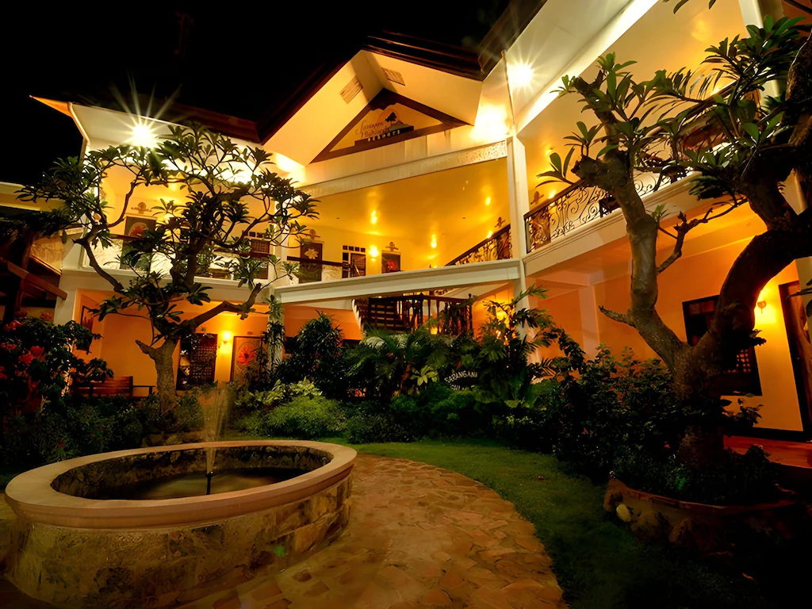

Things To Do in GenSan
Good ForGarden Views
ExperienceDining & Photos
LocationPurok Wal. Brgy. Tambler G.S.C
Also OffersHotel Rooms
Sarangani Highlands Garden
A hidden paradise nestled in the heart of General Santos City, where gardens, bay views, food, rooms, and quiet photo spots come together in one relaxing highland stop.
A Hidden Paradise
Nature, comfort, and warm hospitality
Sarangani Highlands Garden offers a peaceful escape from the busy city with colorful gardens, open-air spaces, bay views, and a relaxed restaurant setting. It is a good stop for families, couples, barkada trips, and visitors who want a scenic place to unwind.
You can enjoy a meal, take photos around the flower displays, relax near the infinity pool, or book a room for a quieter stay. The place is especially nice during cooler hours when the highland view feels more relaxing.
Suggested Route
Best time to go: Late Afternoon or Evening
- ARRIVE EARLYCome around 4:00 PM to enjoy the cooler weather and explore before sunset.
- WALK AROUNDTake a relaxing stroll through the landscaped gardens and scenic pathways.
- PHOTO STOPCapture photos among the flowers, garden features, and overlooking views.
- WATCH THE SUNSETFind a comfortable spot and enjoy the changing colors of the afternoon sky.
- ENJOY DINNERChoose your favorite dishes and experience relaxing alfresco garden dining.
- RELAXEnjoy the cool evening air, peaceful surroundings, and illuminated gardens.
- CELEBRATE TOGETHERSpend quality time with family, friends, or someone special in a beautiful setting.
- END YOUR VISITTake a final evening walk, capture a few more photos, and leave with memorable moments.
Sarangani Highlands Garden visitor information
Best For
Scenic highland visits
- Infinity pool with bay view
- Beautiful landscaped gardens
- Garden restaurant and dining
- Hotel accommodations
- Family getaways and barkada trips
- Events and celebrations
- Taking photos
Quick Info
Visit details
- Best Time to Go
- Morning for fresh air
Late afternoon or evening for cooler views - Location
- Purok Wal. Brgy. Tambler G.S.C
- Amenities
- Infinity pool, garden restaurant, hotel rooms, bay view areas, and event spaces
- Tip
- Confirm room rates, dining hours, and pool access before visiting.

Relax, unwind, and create unforgettable memories at Sarangani Highlands Garden, your garden-view stop in GenSan.
Book your stay
Photo Stops
More Sarangani moments
0 People Reacted
Was this guide helpful?
Explore Nearby